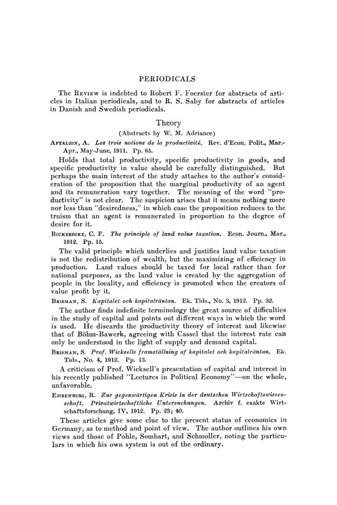

Dezembro de 1912: o que é preço, de onde vêm os juros
Leitura: 10 min
Fetter reúne 117 definições de preço e propõe uma nova, Seager critica a teoria dos juros de Fisher, Willis testa o argumento dos fretes na América do Sul e Kemmerer estuda o crédito agrícola.


Para escrever uma definição de preço, Frank A. Fetter, da Princeton University, foi às bibliotecas de Princeton e de Columbia, abriu todos os manuais gerais de economia e todas as enciclopédias econômicas que encontrou e recolheu 117 definições. É com esse inventário que abre o número de dezembro de 1912 da American Economic Review, o último do segundo ano da revista.
A edição traz quatro artigos. Além de Fetter, H. Parker Willis examina se o transporte marítimo prejudicava os exportadores americanos na América do Sul; Henry R. Seager, da Columbia University, critica a teoria dos juros como impaciência, de Irving Fisher; e E. W. Kemmerer, também de Princeton, estuda o crédito agrícola de curto prazo nos Estados Unidos. Seguem-se cerca de cinquenta resenhas, entre elas a de John Bates Clark sobre a Theorie der wirtschaftlichen Entwicklung de Joseph Schumpeter, listas de livros novos, documentos oficiais, resumos de periódicos e as notas da redação.
O que é, afinal, um preço?
Frank A. Fetter (Princeton University) · “The Definition of Price” · pp. 783–813
Fetter parte da necessidade, sentida por todos os economistas, de uma terminologia mais clara, e escolhe o preço como primeiro termo a discutir por parecer o mais simples. Classifica as 117 definições em três grupos, conforme a noção de valor a que se ligam: valor de troca objetivo, isto é, poder de compra; valor subjetivo, isto é, estima; e razão de troca, uma expressão matemática. Cada grupo se divide em definições monetárias, em que preço é necessariamente dinheiro, e não monetárias, em que qualquer bem dado em troca é preço.
A parte histórica mostra uma trajetória. Antes de Ricardo, todas as definições da lista eram não monetárias. Ricardo, homem da City que só conhecia preços em dinheiro, deu o primeiro exemplo claro do preço como valor de troca em moeda, e J. S. Mill, em 1848, fez dessa a forma dominante, com o argumento de que o caráter monetário era a única distinção entre valor e preço. Depois de 1871, com Menger e Jevons, as definições ligadas ao valor subjetivo voltaram a crescer, sobretudo fora da Inglaterra. As poucas definições de preço como razão de troca, inclusive a de Irving Fisher, remontam a Jevons, cuja sugestão Fetter considera um beco sem saída.
Fetter conclui que a maior parte das definições foi escolhida por acaso, imitação ou deferência à autoridade, e faz duas propostas. A primeira é definir o preço sem referência ao valor, termo mais ambíguo: a definição não deve conter uma teoria do preço. A segunda é não limitá-lo ao dinheiro, porque toda expressão de preço já precisa indicar em que bem é cotada, e porque o escambo continua existindo.
A definição a que chega é: “preço é a quantidade de bens dada ou recebida em troca de outro bem”. (“Price is the quantity of goods given or received in exchange for another good.”)
O navio decidia o comércio com a América do Sul?
H. Parker Willis (Washington, D. C.) · “Transportation and Competition in South American Markets” · pp. 814–833
Willis parte de um argumento então frequente nos debates sobre subsídios à marinha mercante: o pouco sucesso americano em certos mercados sul-americanos se deveria a más condições de transporte a partir dos Estados Unidos. Para testá-lo, isola o transporte e supõe um exportador com mercadoria igual em qualidade e preço à de seus concorrentes britânicos e alemães. A pergunta é se esse exportador consegue pôr seus produtos nas mãos do comprador sul-americano em condições de igualdade.
Examina primeiro a tonelagem. Em abril de 1910, seis grandes firmas exportadoras de Nova York declararam publicamente que cinco linhas iam direto ao Brasil e que, para a Argentina, sete linhas faziam de seis a oito partidas por mês, com fretes abaixo dos oferecidos aos concorrentes europeus. Willis reproduz listas de partidas de Nova York e o depoimento de armadores. Compara depois os fretes: em maio de 1910, embarcar farinha em barris para Pernambuco custava menos a partir de Nova York do que de Liverpool, Hamburgo ou Trieste.
Willis discute também o processo do governo contra as linhas Prince, Hamburg-Amerika e outras, por acordo de partidas e abatimentos, e conclui que, mesmo provado, ele não mostraria fretes excessivos. Sobre correio e passageiros, sustenta que as cartas comerciais importantes já seguiam em navios diretos. Admite uma vantagem alemã nas tarifas ferroviárias de exportação, pelas quais trilhos iam mais baratos de Frankfurt a Constantinopla, via Hamburgo, do que de Frankfurt só até Hamburgo, mas julga o ponto de pouca importância.
A conclusão é que não há evidência de discriminação séria contra os Estados Unidos. A Inglaterra e a Alemanha tinham navios maiores e mais frequentes para a América do Sul porque o volume de comércio era maior: no mar como em terra, o tráfego gera tráfego. Para Willis, a comunicação podia ser desenvolvida por meios naturais, sem subvenções do governo.
Os juros nascem só da impaciência?
Henry R. Seager (Columbia University) · “The Impatience Theory of Interest” · pp. 834–851
Seager parte da reapresentação da teoria dos juros de Irving Fisher num manual de 1912, Elementary Principles of Economics. Para Fisher, a essência dos juros é a impaciência, a preferência por bens presentes sobre bens futuros, que depende de traços pessoais, como previdência, autocontrole e amor à descendência, e das características da renda esperada. Fisher nega duas ideias de Böhm-Bawerk: a distinção entre terra e capital e a influência da produtividade do capital sobre os juros.
A primeira objeção de Seager é que Fisher separa por completo a explicação dos juros da explicação da produção, como se as rendas brotassem espontaneamente. A segunda é que a impaciência não é atributo fundamental da natureza humana. Sem a produtividade do capital, diz, muita gente pouparia mesmo sem juros, como mostram os camponeses franceses que entesouravam moedas, e os mais impacientes, em geral assalariados de renda pequena, teriam pouco poder de tomar empréstimos. Seager ilustra com um bebedor inveterado de renda pequena e certa, que jamais conseguiria tomar emprestado o bastante para reduzir sua impaciência ao nível da taxa de juros.
A terceira objeção ataca os exemplos de Fisher. O argumento de que a terra vale US$ 100.000 porque esse é o valor descontado de US$ 5.000 por ano só funciona, diz Seager, porque a terra tem oferta fixa; ferramentas e máquinas são produzidas, e seu valor tende ao custo de produzi-las. Do mesmo modo, se a produtividade de todos os instrumentos dobrasse, eles seriam multiplicados até que seu valor voltasse ao custo, e o retorno maior apareceria como juros mais altos.
Para Seager, querer elevar os juros por outra via que não a produtividade é como aumentar um rio por mudanças “no oceano em que ele deságua”. (“like the idea of increasing the volume of a stream by changes … in the ocean into which it flows”)
Seager conclui que a teoria de Fisher é verdadeira até onde vai, mas incompleta: a produtividade é o complemento necessário da teoria do desconto. Observa ainda que os exemplos históricos do próprio Fisher, os juros altos da Califórnia entre 1850 e 1870, parecem confirmar a explicação pela produtividade.
Por que o fazendeiro americano não usava crédito?
E. W. Kemmerer (Princeton University) · “Agricultural Credit in the United States” · pp. 852–872
Kemmerer parte de um contraste: os Estados Unidos lideravam o mundo em produção agrícola e em negócios bancários, mas estavam atrás de quase todos os países avançados em crédito agrícola de curto prazo, sem hipoteca. A indústria e o comércio se financiavam assim; a agricultura, não. Muitos fazendeiros, diz, pareciam aceitar o dito atribuído a Luís XIV.
Para o rei, “o crédito sustenta a agricultura como a corda sustenta o enforcado”. (“Credit supports agriculture, as the cord supports the hanged.”)
Os bancos estavam concentrados nas cidades: dos 7.301 bancos nacionais existentes em 1º de setembro de 1911, 192 ficavam nas doze maiores cidades, com 14% da população; seus bancos nacionais concentravam 40% dos empréstimos. A lei, porém, não impedia empréstimos a fazendeiros, salvo a proibição de garantia imobiliária aos bancos nacionais. Como não havia estatística sobre esses empréstimos, Kemmerer recorre a depoimentos de banqueiros e encontra um quadro confuso, de práticas muito variadas. Onde não havia banco, o crédito vinha do comerciante, em contas de loja pagas na colheita; no Sul, o sistema de penhor da safra ao armazém cobrava juros que uma testemunha estimou em cerca de 40% ao ano.
Entre as causas do atraso, Kemmerer aponta a terra barata, a prosperidade dos fazendeiros, a mobilidade da população rural, o isolamento das fazendas e o crescimento acelerado da indústria e do comércio. Mas essas causas estavam passando: o valor médio da terra por acre subira de US$ 15,57 em 1900 para US$ 32,40 em 1910, e a mecanização exigia capital de giro.
Kemmerer rejeita bancos agrícolas estatais, descreve o sistema cooperativo Raiffeisen alemão e registra as primeiras oito cooperativas de crédito rural organizadas nos Estados Unidos pela Jewish Agricultural and Industrial Aid Society, de Nova York, em 1911 e 1912. Em Massachusetts, único estado com lei própria, de 1909, 22 cooperativas de crédito tinham sido criadas até março de 1912, nenhuma entre fazendeiros. Conclui que o mais necessário é educar fazendeiros e banqueiros, permitir aos bancos nacionais empréstimos com garantia imobiliária e tornar a moeda e o crédito mais elásticos.
O que mais há na edição?
Entre as resenhas, além da de Clark sobre Schumpeter, Harry G. Brown trata das Laws of Wages de Henry Ludwell Moore; Jacob H. Hollander, da History of Economic Thought de Lewis H. Haney; Edward Alsworth Ross, do estudo de Chen Huan-Chang sobre os princípios econômicos de Confúcio; e F. W. Taussig, do livro de Roy G. Blakey sobre o açúcar de beterraba e a tarifa. As notas anunciam a reunião anual da associação em Boston, com sessões sobre salário mínimo, alta do custo de vida e reforma bancária, e o discurso presidencial de Fetter.
Na minha leitura
Na minha leitura, três dos quatro artigos tratam do mesmo problema por ângulos diferentes: o que se deve pôr dentro de um conceito antes de usá-lo. Fetter quer que a definição de preço não carregue uma teoria do valor; Seager acusa Fisher de construir a teoria dos juros com um conceito de capital que mistura terra e máquinas; Kemmerer começa reclamando que não há sequer estatística do crédito agrícola, e que sem ela qualquer reforma seria às cegas. Willis faz o mesmo exercício com um argumento político, isolando o transporte de todas as outras variáveis antes de medir seu efeito.
Glossário
- Valor de troca
- poder de compra de um bem sobre outros bens, no sentido da escola de Ricardo e Mill.
- Valor subjetivo
- estima que uma pessoa atribui a um bem, no sentido da escola austríaca.
- Razão de troca
- proporção em que dois bens se trocam, termo que Jevons propôs no lugar de valor.
- Teoria da impaciência
- explicação de Fisher para os juros como preferência por bens presentes sobre futuros.
- Produtividade do capital
- maior produto obtido com métodos que usam meios de produção produzidos.
- Crédito agrícola
- no artigo de Kemmerer, crédito de curto prazo ao fazendeiro, sem hipoteca.
- Penhor da safra
- garantia sobre a colheita futura dada ao credor, comum no Sul dos Estados Unidos.
- Raiffeisen
- sistema alemão de cooperativas de crédito rural, com empréstimos só a associados.
Artigos (4)
- The Definition of Price — Frank A. Fetter (Princeton University) (pp. 783–813) · resenha acima · comentário completo · JSTOR
- Transportation and Competition in South American Markets — H. Parker Willis (Washington, D. C.) (pp. 814–833) · resenha acima · JSTOR
- The Impatience Theory of Interest — Henry R. Seager (Columbia University) (pp. 834–851) · resenha acima · comentário completo · JSTOR
- Agricultural Credit in the United States — E. W. Kemmerer (Princeton University) (pp. 852–872) · resenha acima · JSTOR
Resenhas (40)
- Joseph Schumpeter, Theorie der wirtschaftlichen Entwicklung — John Bates Clark (pp. 873–875). Resenha do livro de Schumpeter sobre o desenvolvimento econômico. JSTOR
- Henry Ludwell Moore, Laws of Wages — Harry G. Brown (pp. 875–877). Resenha de um ensaio de economia estatística sobre salários. JSTOR
- Lewis H. Haney, History of Economic Thought — Jacob H. Hollander (pp. 877–879). Resenha de uma história crítica das teorias econômicas. JSTOR
- Carl Koepp, Das Verhältnis der Mehrwerttheorien von Karl Marx und Thomas Hodgskin — Esther Lowenthal (pp. 879–881). Resenha de um estudo comparativo das teorias da mais-valia de Marx e Hodgskin. JSTOR
- Karl Diehl e Paul Mombert, Ausgewählte Lesestücke zum Studium der politischen Oekonomie, vols. II e III — Walter Adriance (pp. 881–882). Resenha de uma coletânea de textos para o estudo da economia política. JSTOR
- Ernest Felder, Der Wert im Gesetze — J. E. LeRossignol (pp. 883). Resenha de um estudo sobre o valor nas leis e decisões judiciais austríacas. JSTOR
- Chen Huan-Chang, The Economic Principles of Confucius and his School — Edward Alsworth Ross (pp. 883–884). Resenha de um compêndio do pensamento econômico chinês, publicado pela Columbia University. JSTOR
- Hermann Schumacher, Weltwirtschaftliche Studien — Edward Van Dyke Robinson (pp. 886–887). Resenha de uma coletânea de conferências e ensaios sobre economia mundial. JSTOR
- Karl Brauer, Kritische Studien zur Literatur und Quellenkunde der Wirtschaftsgeschichte — Clive Day (pp. 887). Resenha de um estudo sobre fontes e literatura da história econômica. JSTOR
- Riccardo Bachi, L'Italia economica nel 1911 — Robert F. Foerster (pp. 888). Resenha de um anuário da economia italiana. JSTOR
- Samuel O. Dunn, The American Transportation Question — Frank L. McVey (pp. 893–895). Resenha de um livro sobre a questão ferroviária americana. JSTOR
- Charles Lee Raper, Railway Transportation — Stuart Daggett (pp. 895–896). Resenha de uma história da economia ferroviária e de sua relação com o Estado. JSTOR
- Edwin M. Bacon, Manual of Navigation Laws — E. J. Clapp (pp. 896–897). Resenha de um manual de leis de navegação. JSTOR
- Georg Schmidt, Geschichte des Welthandels — Clive Day (pp. 898). Resenha da segunda edição de uma história breve do comércio mundial. JSTOR
- Edward W. Bemis, Report upon the Price of Gas in Chicago — H. G. Friedman (pp. 899). Resenha de um relatório sobre o preço do gás em Chicago. JSTOR
- Joseph A. Joyce, A Treatise on Monopolies and Unlawful Combinations or Restraints — Maurice H. Robinson (pp. 901–903). Resenha de um tratado jurídico sobre monopólios e combinações. JSTOR
- The Regulation of Municipal Utilities, org. Clyde Lyndon King — H. G. Friedman (pp. 903–904). Resenha de uma coletânea sobre a regulação de serviços públicos municipais. JSTOR
- Report of St. Louis Public Service Commission on Rates for Electric Light and Power — H. G. Friedman (pp. 905). Resenha do relatório de uma comissão municipal sobre tarifas de eletricidade. JSTOR
- David A. McCabe, The Standard Rate in American Trade Unions — H. A. E. Chandler (pp. 906–908). Resenha de um estudo da Johns Hopkins sobre a taxa salarial uniforme nos sindicatos. JSTOR
- Finding Employment for Children who Leave the Grade Schools to go to Work — Susan M. Kingsbury (pp. 908–909). Resenha de um relatório de Chicago sobre o emprego de crianças que deixam a escola. JSTOR
- Earl A. Saliers, The Coal Miner — Frank T. Carlton (pp. 910). Resenha de um estudo sobre a luta dos mineiros do Hocking Valley por salários regulados. JSTOR
- Ernest L. Talbert, Opportunities in School and Industry for Children of the Stockyards District, e outros — Frank T. Carlton (pp. 910–912). Resenha de estudos curtos sobre crianças, envenenamento por mercúrio e acidentes em minas. JSTOR
- Henry H. Schloesser e W. Smith Clark, The Legal Position of Trade Unions — Lindley D. Clark (pp. 912–913). Resenha de um livro sobre a situação jurídica dos sindicatos ingleses. JSTOR
- H. Lichtenfelt, Über die Ernährung und deren Kosten bei deutschen Arbeitern; F. Krömmelbein, Massenverbrauch und Preisbewegung in der Schweiz — Donald F. Grass (pp. 914–915). Resenha de dois estudos sobre alimentação, consumo e preços. JSTOR
- William Graham, The One Pound Note in the History of Banking in Great Britain — William A. Scott (pp. 916–917). Resenha de uma história da nota de uma libra no sistema bancário britânico. JSTOR
- Roy G. Blakey, The United States Beet-Sugar Industry and the Tariff — F. W. Taussig (pp. 919–921). Resenha de um estudo sobre a indústria do açúcar de beterraba e a tarifa. JSTOR
- Paul Leroy-Beaulieu, Traité de la science des finances — C. J. Bullock (pp. 921–923). Resenha da oitava edição do tratado de finanças públicas. JSTOR
- Bruno Moll, Untersuchungen zur Geschichte des Objektes direkter Steuern — Raymond V. Phelan (pp. 923–924). Resenha de um estudo sobre a história da base dos impostos diretos. JSTOR
- E. George Payne, An Experiment in Alien Labor — Mary Roberts Coolidge (pp. 926–928). Resenha de um estudo sobre trabalho de imigrantes. JSTOR
- Lee Welling Squier, Old Age Dependency in the United States — Robert F. Foerster (pp. 929–931). Resenha de um levantamento do movimento por pensões de velhice. JSTOR
- George F. Kenngott, The Record of a City — W. B. B. (pp. 931–932). Resenha de um levantamento social de Lowell, Massachusetts. JSTOR
- National Housing Association, Proceedings of the First National Housing Conference — J. Ford (pp. 932). Resenha dos anais da primeira conferência nacional de habitação, de 1911. JSTOR
- E. Stagg Whitin, Penal Servitude — Winthrop D. Lane (pp. 932–935). Resenha de um livro sobre o trabalho prisional. JSTOR
- B. Seebohm Rowntree e Bruno Lasker, Unemployment: A Social Study — William H. Pear (pp. 935–937). Resenha de um estudo social sobre o desemprego. JSTOR
- Harry B. Bradbury, Workmen's Compensation and State Insurance Law of the United States — Carroll W. Doten (pp. 938–939). Resenha de um tratado sobre as leis de indenização de acidentes de trabalho. JSTOR
- G. H. Knibbs, Social Insurance — W. F. G. (pp. 939). Resenha de um estudo do serviço de estatística australiano sobre seguro social. JSTOR
- Esther Lowenthal, The Ricardian Socialists; Ira B. Cross, The Essentials of Socialism; Henry C. Vedder, Socialism and the Ethics of Jesus — Herbert E. Mills (pp. 941–945). Resenha conjunta de três livros sobre o socialismo. JSTOR
- Sir Arthur Clay, Syndicalism and Labour; Louis Levine, The Labor Movement in France; Compère-Morel, La Question agraire et le socialisme en France — O. D. Skelton (pp. 945–949). Resenha conjunta de três livros sobre sindicalismo e socialismo. JSTOR
- John Lee Coulter, Cooperation among Farmers — T. N. Carver (pp. 949–950). Resenha de um livro sobre cooperativas de fazendeiros. JSTOR
- Report on Industrial and Agricultural Cooperative Societies in the United Kingdom — James Ford (pp. 950–951). Resenha de um relatório oficial sobre cooperativas industriais e agrícolas britânicas. JSTOR
Novos livros (16)
- New Books (teoria e sua história) — redação (pp. 884–885). Lista de lançamentos de teoria e história do pensamento. JSTOR
- New Books (história econômica e geografia) — redação (pp. 888–891). Lista de lançamentos da seção. JSTOR
- New Books (agricultura) — redação (pp. 891–892). Lista de lançamentos da seção. JSTOR
- New Books (indústrias) — redação (pp. 892–893). Lista de lançamentos da seção. JSTOR
- New Books (transportes e comunicações) — redação (pp. 897–898). Lista de lançamentos da seção. JSTOR
- New Books (comércio e crises) — redação (pp. 898). Lista de lançamentos da seção. JSTOR
- New Books (contabilidade, investimentos e bolsas) — redação (pp. 899–901). Lista de lançamentos da seção. JSTOR
- New Books (capital e organização capitalista) — redação (pp. 905–906). Lista de lançamentos da seção. JSTOR
- New Books (trabalho e organizações de trabalhadores) — redação (pp. 915–916). Lista de lançamentos da seção. JSTOR
- New Books (moeda, preços, crédito e bancos) — redação (pp. 917–918). Lista de lançamentos da seção. JSTOR
- New Books (finanças públicas, tributação e tarifa) — redação (pp. 924–926). Lista de lançamentos da seção. JSTOR
- New Books (população e migração) — redação (pp. 928–929). Lista de lançamentos da seção. JSTOR
- New Books (problemas e reformas sociais) — redação (pp. 937–938). Lista de lançamentos da seção. JSTOR
- New Books (seguros e pensões) — redação (pp. 939–941). Lista de lançamentos da seção. JSTOR
- New Books (socialismo e cooperativas) — redação (pp. 951–952). Lista de lançamentos da seção. JSTOR
- New Books (estatística) — redação (pp. 952). Lista de lançamentos da seção. JSTOR
Documentos, periódicos e notas (3)
- Documents, Reports and Legislation — redação (pp. 953–976). Documentos oficiais, a começar pelo relatório da comissão de Massachusetts sobre armazenagem a frio. JSTOR
- Periodicals — redação (pp. 977–1031). Resumos de artigos de periódicos, por área. JSTOR
- Notes — redação (pp. 1032–1040). Notas da redação, com o programa da reunião anual da associação em Boston. JSTOR
Fontes
- The Definition of Price (pp. 783–813). JSTOR · Internet Archive (PDF)
- Transportation and Competition in South American Markets (pp. 814–833). JSTOR · Internet Archive (PDF)
- The Impatience Theory of Interest (pp. 834–851). JSTOR · Internet Archive (PDF)
- Agricultural Credit in the United States (pp. 852–872). JSTOR · Internet Archive (PDF)
- [untitled] The American Economic Review, (1912-12-01), pages 873-875 (pp. 873–875). JSTOR · Internet Archive (PDF)
- [untitled] The American Economic Review, (1912-12-01), pages 875-877 (pp. 875–877). JSTOR · Internet Archive (PDF)
- [untitled] The American Economic Review, (1912-12-01), pages 877-879 (pp. 877–879). JSTOR · Internet Archive (PDF)
- [untitled] The American Economic Review, (1912-12-01), pages 879-881 (pp. 879–881). JSTOR · Internet Archive (PDF)
- [untitled] The American Economic Review, (1912-12-01), pages 881-882 (pp. 881–882). JSTOR · Internet Archive (PDF)
- [untitled] The American Economic Review (1912-12-01), page 883 (pp. 883). JSTOR · Internet Archive (PDF)
- [untitled] The American Economic Review, (1912-12-01), pages 883-884 (pp. 883–884). JSTOR · Internet Archive (PDF)
- New Books (pp. 884–885). JSTOR · Internet Archive (PDF)
- [untitled] The American Economic Review, (1912-12-01), pages 886-887 (pp. 886–887). JSTOR · Internet Archive (PDF)
- [untitled] The American Economic Review (1912-12-01), page 887 (pp. 887). JSTOR · Internet Archive (PDF)
- [untitled] The American Economic Review (1912-12-01), page 888 (pp. 888). JSTOR · Internet Archive (PDF)
- New Books (pp. 888–891). JSTOR · Internet Archive (PDF)
- New Books (pp. 891–892). JSTOR · Internet Archive (PDF)
- New Books (pp. 892–893). JSTOR · Internet Archive (PDF)
- [untitled] The American Economic Review, (1912-12-01), pages 893-895 (pp. 893–895). JSTOR · Internet Archive (PDF)
- [untitled] The American Economic Review, (1912-12-01), pages 895-896 (pp. 895–896). JSTOR · Internet Archive (PDF)
- [untitled] The American Economic Review, (1912-12-01), pages 896-897 (pp. 896–897). JSTOR · Internet Archive (PDF)
- New Books (pp. 897–898). JSTOR · Internet Archive (PDF)
- [untitled] The American Economic Review (1912-12-01), page 898 (pp. 898). JSTOR · Internet Archive (PDF)
- New Books (pp. 898). JSTOR · Internet Archive (PDF)
- [untitled] The American Economic Review (1912-12-01), page 899 (pp. 899). JSTOR · Internet Archive (PDF)
- New Books (pp. 899–901). JSTOR · Internet Archive (PDF)
- [untitled] The American Economic Review, (1912-12-01), pages 901-903 (pp. 901–903). JSTOR · Internet Archive (PDF)
- [untitled] The American Economic Review, (1912-12-01), pages 903-904 (pp. 903–904). JSTOR · Internet Archive (PDF)
- [untitled] The American Economic Review (1912-12-01), page 905 (pp. 905). JSTOR · Internet Archive (PDF)
- New Books (pp. 905–906). JSTOR · Internet Archive (PDF)
- [untitled] The American Economic Review, (1912-12-01), pages 906-908 (pp. 906–908). JSTOR · Internet Archive (PDF)
- [untitled] The American Economic Review, (1912-12-01), pages 908-909 (pp. 908–909). JSTOR · Internet Archive (PDF)
- [untitled] The American Economic Review (1912-12-01), page 910 (pp. 910). JSTOR · Internet Archive (PDF)
- [untitled] The American Economic Review, (1912-12-01), pages 910-912 (pp. 910–912). JSTOR · Internet Archive (PDF)
- [untitled] The American Economic Review, (1912-12-01), pages 912-913 (pp. 912–913). JSTOR · Internet Archive (PDF)
- [untitled] The American Economic Review, (1912-12-01), pages 914-915 (pp. 914–915). JSTOR · Internet Archive (PDF)
- New Books (pp. 915–916). JSTOR · Internet Archive (PDF)
- [untitled] The American Economic Review, (1912-12-01), pages 916-917 (pp. 916–917). JSTOR · Internet Archive (PDF)
- New Books (pp. 917–918). JSTOR · Internet Archive (PDF)
- [untitled] The American Economic Review, (1912-12-01), pages 919-921 (pp. 919–921). JSTOR · Internet Archive (PDF)
- [untitled] The American Economic Review, (1912-12-01), pages 921-923 (pp. 921–923). JSTOR · Internet Archive (PDF)
- [untitled] The American Economic Review, (1912-12-01), pages 923-924 (pp. 923–924). JSTOR · Internet Archive (PDF)
- New Books (pp. 924–926). JSTOR · Internet Archive (PDF)
- [untitled] The American Economic Review, (1912-12-01), pages 926-928 (pp. 926–928). JSTOR · Internet Archive (PDF)
- New Books (pp. 928–929). JSTOR · Internet Archive (PDF)
- [untitled] The American Economic Review, (1912-12-01), pages 929-931 (pp. 929–931). JSTOR · Internet Archive (PDF)
- [untitled] The American Economic Review, (1912-12-01), pages 931-932 (pp. 931–932). JSTOR · Internet Archive (PDF)
- [untitled] The American Economic Review (1912-12-01), page 932 (pp. 932). JSTOR · Internet Archive (PDF)
- [untitled] The American Economic Review, (1912-12-01), pages 932-935 (pp. 932–935). JSTOR · Internet Archive (PDF)
- [untitled] The American Economic Review, (1912-12-01), pages 935-937 (pp. 935–937). JSTOR · Internet Archive (PDF)
- New Books (pp. 937–938). JSTOR · Internet Archive (PDF)
- [untitled] The American Economic Review, (1912-12-01), pages 938-939 (pp. 938–939). JSTOR · Internet Archive (PDF)
- [untitled] The American Economic Review (1912-12-01), page 939 (pp. 939). JSTOR · Internet Archive (PDF)
- New Books (pp. 939–941). JSTOR · Internet Archive (PDF)
- [untitled] The American Economic Review, (1912-12-01), pages 941-945 (pp. 941–945). JSTOR · Internet Archive (PDF)
- [untitled] The American Economic Review, (1912-12-01), pages 945-949 (pp. 945–949). JSTOR · Internet Archive (PDF)
- [untitled] The American Economic Review, (1912-12-01), pages 949-950 (pp. 949–950). JSTOR · Internet Archive (PDF)
- [untitled] The American Economic Review, (1912-12-01), pages 950-951 (pp. 950–951). JSTOR · Internet Archive (PDF)
- New Books (pp. 951–952). JSTOR · Internet Archive (PDF)
- New Books (pp. 952). JSTOR · Internet Archive (PDF)
- Documents, Reports and Legislation (pp. 953–976). JSTOR · Internet Archive (PDF)
- Periodicals (pp. 977–1031). JSTOR · Internet Archive (PDF)
- Notes (pp. 1032–1040). JSTOR · Internet Archive (PDF)
- Sumário da edição no JSTOR: The American Economic Review, vol. 2, nº 4.
Documento em domínio público (EUA, publicado antes de 1931), via JSTOR Early Journal Content e Internet Archive. Resumo e comentário do autor deste site, sem afiliação com a American Economic Association. Encontrou um erro? Escreva: a correção é publicada no próprio texto, com data.
← Nº 120 · Setembro de 1912: a maré dos preços, o algodão e a tarifa Nº 122 · Março de 1913: números-índice, um tribunal e a previsão dos negócios →